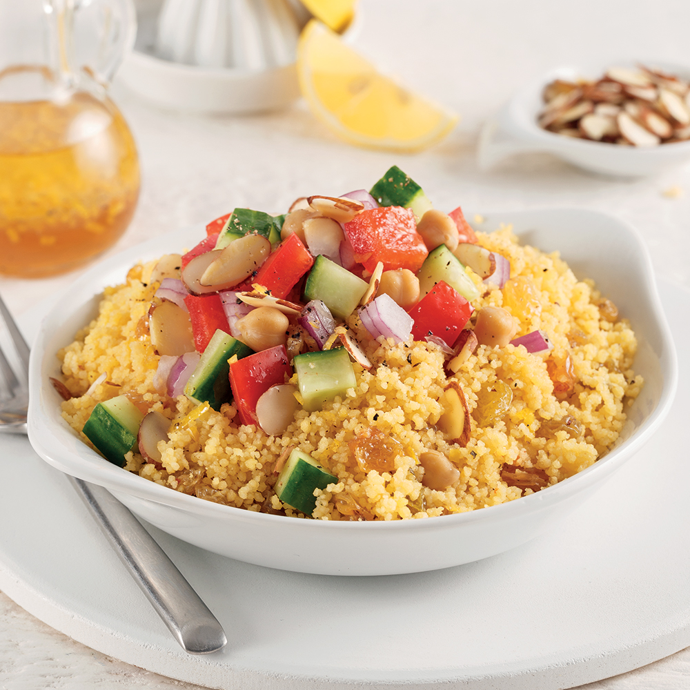
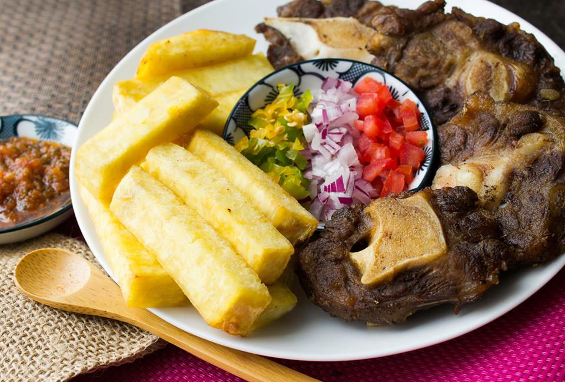
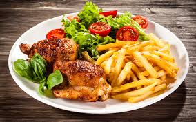

In my South, the most treasured things passed down from generation to generation are the family recipes. A Recipe is a story that ends with a good meal ! if god hadn't intended us to follow recipes, He wouldn't have given us grandmothers.
I/ A step-by-step Couscous Recipe :
If there are cows that have gone mad it is because they have been fed mutton. Others got fussy and asked for couscous. If you like your couscous, eat it when it's hot !

List of Ingredients :
One pack of Couscous
A set of vegetables
The meat (mutton, beef, sausages, etc ....)
Oil and concentrated tomato
Additionally, some wine !
How To Get Done :
Gently cut your vegetables to start
Fry the meat (mutton, beef, sausages, etc ...)
Put oil on the fire and add concentrated tomato
Wait for this thigh by turning gently for a few minutes
Add the cut vegetables and close the lid for a moment for a good seasoning
Then add water (volume of water depending on the amount of couscous to prepare)
Wait for the water to boil well and gently add the couscous while turning the mixture
Wait for about 5 to 7 min for it to get ready
Done! Serve; Add some meat, some wine and, Enjoy your meal !
II/ A step-by-step Spaghetti Recipe :
If you're a leader, you don't push wet spaghetti, you pull it. When you really want to show some love, keep the flowers and say it with spaghetti !
List of Ingredients :
One pack of Spaghetti
A set of vegetables
The meat (mutton, beef, sausages, etc ...)
Oil and concentrated tomato
Additionally, some wine !
How To Get Done :
Gently cut your vegetables to start
Fry the meat (mutton, beef, sausages, etc ...)
Put oil on the fire and add concentrated tomato
Wait for this thigh by turning gently for a few minutes
Add the cut vegetables and close the lid for a moment for a good seasoning
Then add a very little volume of water
Wait for the water to boil well and gently add the Spaghetti while turning the mixture
Wait for about 10 to 15 min for it to get ready
Done! Serve; Add some meat, some wine and, Enjoy your meal !
III/ A step-by-step Koliko Recipe :
Sometimes the best way to tast good yams is to make Koliko with them. If you like your Koliko, eat it when it's hot !

List of Ingredients :
One set of yams (From 'Bassar' is recommended)
A set of vegetables
The meat (mutton, beef, sausages, etc ...)
Oil and concentrated tomato
Additionally, some wine !
How To Get Done :
Gently cut your vegetables and your yams to start
Fry the meat (mutton, beef, sausages, etc ...)
Put oil on the fire and add concentrated tomato
Wait for this thigh by turning gently for a few minutes
Add the cut vegetables and close the lid for a moment for a good seasoning
Then add water (volume of water depending on the amount of couscous to prepare)
Wait for the water to boil well and take it off the fire.
Put oil on the fire once again in another pan
Add sequencely your cutted yams and wait for them to be ready everytime
Done! Serve; Add some meat, some wine and, Enjoy your meal !
IV/ A step-by-step Fries Recipe :
There's no 'we' in fries.. I wish I was a bird so I can just steal other peoples' French fries all day long !

List of Ingredients :
One set of Potatoes
A set of vegetables
The meat (mutton, beef, sausages, etc ...)
Oil and Ketchup
Additionally, some wine !
How To Get Done :
Gently cut your vegetables and the potatoes to start
Fry the meat (mutton, beef, sausages, etc ...)
Put oil on the fire and cutted vegetables
Wait for this thigh by turning gently for a few minutes for a good seasoning
Put oil on the fire once again in another pan
Add sequencely your cutted potatoes and wait for them to be ready everytime
Done! Serve; Add some meat, some wine and, Enjoy your meal !